6．空间曲线
克莱罗开创了空间曲线的理论——三维微分几何的第一个重大发展。克莱罗（1713—1765）是早熟的。早在12岁时他就写了一本关于曲线的很好的书。1731年他发表了《关于双重曲率曲线的研究》（Recherche sur les courbes à double courbure），该书写于1729年，那时他只有16岁。在该书中他论述了曲面和空间曲线的解析学（第2节）。克莱罗的另一篇论文使他在17岁这样前所未有的年龄被选进了法国科学院。1743年他出版了他关于地球形状的经典著作。这里他以比牛顿或麦克劳林更完全的形式论述了旋转体的形状，例如当地球在其各部分相互间的万有引力作用下所取的形状。他还在三体问题方面进行过工作，主要是研究月球的运动（第21章第7节）而且写了几篇关于这个问题的论文，其中有一篇得到了彼得堡科学院1750年的奖金。1763年他发表了《关于月球的理论》（Théorie de la lune）。克莱罗具有伟人的魅力而且是巴黎社会中的一个知名人物。
在他1731年的著作中，他解析地论述了空间中曲线的基本问题。他把空间曲线叫做“双曲率曲线”，因为他信奉笛卡儿，考虑了空间曲线在两个垂直平面上的投影。于是空间曲线就分享了两条平面曲线的曲率。几何上他把一条空间曲线看作是两个曲面的交线；分析上每个曲面的方程表示为一个三变量的方程（第2节）。然后克莱罗研究了双曲率曲线的切线。他领悟到一条空间曲线在一个垂直于切线的平面上可以有无穷多条法线。空间曲线弧长的表达式以及某些曲面面积的求积公式也是属于他的。
虽然克莱罗在空间曲线的理论方面迈出了几步，但是在1750年前后在空间曲线理论或曲面理论方面所做的工作是微不足道的。这一点反映在欧拉1748年的《引论》中，该书介绍了平面和空间图形的微分几何。平面部分相当完全，但空间部分是不够的。
空间曲线微分几何发展中的第二个重大步骤是由欧拉采取的。欧拉在力学中应用了曲线和曲面，推动了他在微分几何方面的许多工作。他29岁时写的《力学》（Mechanica，1736）(17)是对力学分析基础的一个重大贡献。在他的《固体或刚体的运动理论》（Theoria Motus Corporum Solidorum seu Rigidorum，1765）(18)中，他给出了关于这个课题的另一种处理。在该书中他导出了通常所用的沿一条平面曲线运动的质点的加速度的径向和法向分量的极坐标公式，即
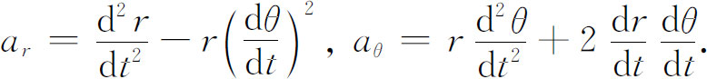
他在1774年开始在空间曲线理论方面进行写作。对扭曲橡皮带所取形状的研究很像是推动欧拉去研究空间曲线理论的一个特殊问题，这个问题是：开始是直的橡皮带，在两端压力作用下扭弯成一条扭曲的曲线，求这曲线所取的形状。为了处理这个问题，他在1774年引进了一些新的概念(19)。然后他在1775年提出的一篇论文(20)中给出了关于扭曲线理论的完整论述。
欧拉用参数方程
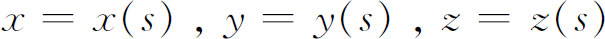
表示空间曲线，其中s是弧长，他和18世纪的其他作者一样用球面三角来进行分析。从参数方程他得到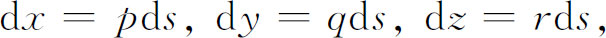
其中p，q和r都是逐点变化的方向余弦，当然要
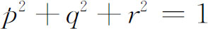
。量ds，即自变量的微分，他是作为一个常量看待的。为了研究曲线的性质，他引进了球面指标线。围绕曲线的任一点（x，y，z），欧拉画了一个半径为1的球。可以把球面指标线定义为单位球上那样一些点的轨迹，从中心O射向这些点的位置向量，就等于（x，y，z）点的单位切向量和（x，y，z）的邻近点的单位切向量。比如图23.12中的两个半径就表示曲线在（x，y，z）点的单位切向量和其一个邻近点的单位切向量。设ds′是曲线上相距ds的两点的两个相邻切线间的弧或角。欧拉关于该曲线的曲率半径的定义便是
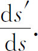
然后他推导了曲率半径的一个解析表达式：
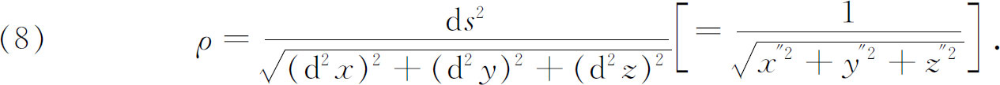
通过ds′和中心O的平面就是欧拉的关于曲线在（x，y，z）点的密切平面的定义。约翰·伯努利——他引进了密切平面这个术语——认为密切平面是由三个“重叠”的点决定的。欧拉给出的密切平面的方程是
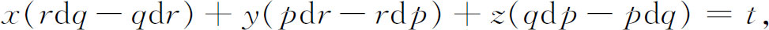
其中t是由曲线与密切平面的交点（x，y，z）确定的。这个方程等价于现今我们用向量记号写的方程
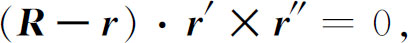
其中
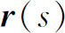
是曲线与密切平面的交点关于空间某点的位置向量，而R是密切平面上任一点的位置向量。r的向量形式由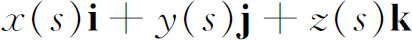
给出，而R的形式为
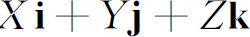
，其中（X，Y，Z）是R的坐标。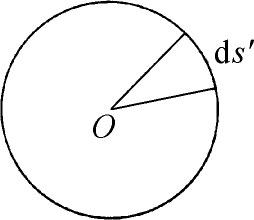
图23.12
克莱罗曾经引进了空间曲线有两个曲率的想法。其中的一个曲率由欧拉以刚才叙述过的方式加以标准化。另一个曲率，现在叫“挠率”，几何上表示一条曲线从（x，y，z）点处的一个平面离开的速率，是由工程师和数学家朗克雷（Michel-Ange Lancret，1774—1807）用分析方法求出它的显式表示的。朗克雷是蒙日的学生而且按蒙日的精神进行研究工作。他在曲线的任一点处选出了三个主方向(21)。第一个主方向是切线方向。“逐次的”切线位于密切平面内。位于密切平面内的法线是主法线，第二个主方向是主法线方向。垂直于密切平面的法线是次法线，次法线方向是第三个主方向。挠率是次法线方向关于弧长的变化率。朗克雷用了逐次密切平面的拐度（flexion）或逐次次法线之类的术语。
朗克雷用
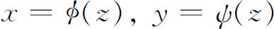
表示一条曲线，并把dμ叫做逐次法平面之间的夹角，而把dν叫做逐次密切平面之间的夹角。于是用近代的记号来写便有
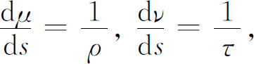
其中ρ是曲率半径，而τ是挠率半径。
柯西在他著名的《无穷小计算在几何上的应用教程》（Leçons sur les applications du calcul infinitésimal à la géométrie，1826）中改进了概念的陈述而且澄清了空间曲线理论中的许多问题(22)。他抛弃了常量无穷小ds，并且纠正了存在于增量和微分间的混乱。他指出，当人们写下
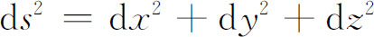
时，就应该理解为
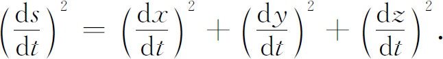
柯西喜欢把曲面写成
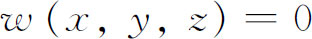
来代替不对称的形式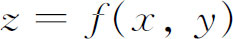
，他把通过点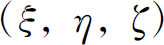
的直线方程写作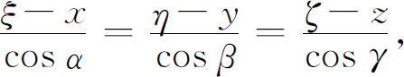
其中cosα，cosβ和cosγ是直线的方向余弦，不过柯西更常用方向数来代替方向余弦。
柯西发展的曲线的几何理论实际上是现代的。他在证明中摆脱了球面三角学，但他也把弧长取作自变量。他得到了任一点处切线的方向余弦
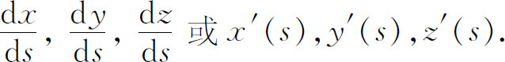
证明了主法线的方向数是
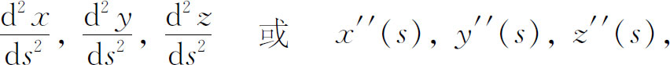
而且曲线的曲率k是
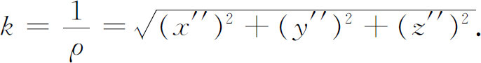
然后他证明了，如果切线的方向余弦是cosα，cosβ和cosγ，则
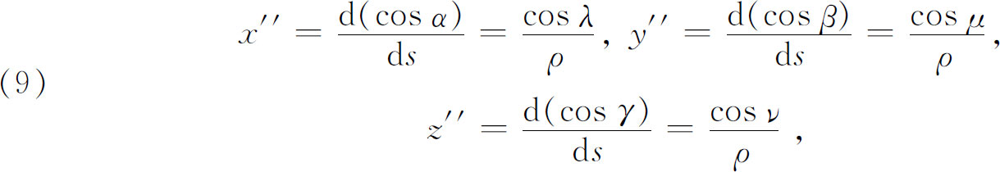
其中ρ是已经介绍过的曲率半径，而cosλ，cosμ和cosν是一条法线的方向余弦，这条法线他取为主法线。其次他证明了
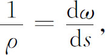
其中ω是相邻切线间的夹角。
他把切线和主法线决定的平面作为密切平面。这个平面的法线是次法线，而次法线的方向余弦cosL，cosM和cosN由下列公式给出：
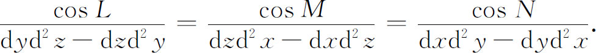
然后他能证明
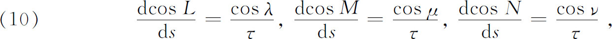
其中
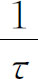
是挠率，并证明挠率等于dΩ/ds，这里Ω是密切平面间的夹角。公式（9）和（10）是三个著名的塞雷特-弗勒内公式中的两个，第三个公式是
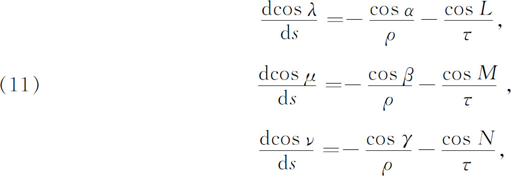
其中1/τ是挠率而1/ρ是曲率。公式（9），（10）和（11）分别给出了切线、次法线和法线的方向余弦的导数，它们是由塞雷特（Joseph Alfred Serret，1819—1885）在1851年(23)和弗勒内（Fréderic Jean Frenét，1816—1900）在1852年(24)发表的。曲率和挠率的意义在于它们是空间曲线的两个根本的性质。作为曲线弧长的函数的曲率和挠率给定之后，除了曲线在空间的摆法外，曲线就完全被决定了。这个定理在塞雷特-弗勒内公式的基础上是容易证明的。